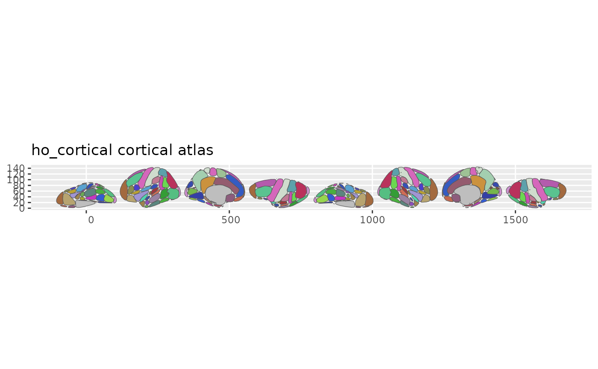

Cortical parcellation with 48 regions per hemisphere from the
Harvard-Oxford atlas distributed with FSL. Contains 2D polygon
geometry for ggseg::geom_brain() and 3D vertex indices for
ggseg3d::ggseg3d().
Value
A ggseg.formats::ggseg_atlas object (cortical).
References
Makris, et al. (2006) Schizophrenia research 83(2-3):155-151 (doi:10.1016/j.schres.2005.11.020 )
See also
Other ggseg_atlases:
ho2_cereb(),
ho2_cort(),
ho2_sub(),
hoSub()
Other cortical_atlases:
ho2_cort()
Examples
hoCort()
#>
#> ── ho_cortical ggseg atlas ─────────────────────────────────────────────────────
#> Type: cortical
#> Regions: 49
#> Hemispheres: left, right
#> Views: inferior, lateral, medial, superior
#> Palette: ✔
#> Rendering: ✔ ggseg
#> ✔ ggseg3d (vertices)
#> ────────────────────────────────────────────────────────────────────────────────
#> # A tibble: 98 × 3
#> hemi region label
#> <chr> <chr> <chr>
#> 1 left Frontal_Pole lh_Frontal_Pole
#> 2 left Insular_Cortex lh_Insular_Cortex
#> 3 left Superior_Frontal_Gyrus lh_Superior_Frontal_Gyrus
#> 4 left Middle_Frontal_Gyrus lh_Middle_Frontal_Gyrus
#> 5 left Inferior_Frontal_Gyrus_pars_triangularis lh_Inferior_Frontal_Gyrus_par…
#> 6 left Inferior_Frontal_Gyrus_pars_opercularis lh_Inferior_Frontal_Gyrus_par…
#> 7 left Precentral_Gyrus lh_Precentral_Gyrus
#> 8 left Temporal_Pole lh_Temporal_Pole
#> 9 left Superior_Temporal_Gyrus_anterior lh_Superior_Temporal_Gyrus_an…
#> 10 left Superior_Temporal_Gyrus_posterior lh_Superior_Temporal_Gyrus_po…
#> 11 left Middle_Temporal_Gyrus_anterior lh_Middle_Temporal_Gyrus_ante…
#> 12 left Middle_Temporal_Gyrus_posterior lh_Middle_Temporal_Gyrus_post…
#> 13 left Middle_Temporal_Gyrus_temporooccipital lh_Middle_Temporal_Gyrus_temp…
#> 14 left Inferior_Temporal_Gyrus_anterior lh_Inferior_Temporal_Gyrus_an…
#> 15 left Inferior_Temporal_Gyrus_posterior lh_Inferior_Temporal_Gyrus_po…
#> 16 left Inferior_Temporal_Gyrus_temporooccipital lh_Inferior_Temporal_Gyrus_te…
#> 17 left Postcentral_Gyrus lh_Postcentral_Gyrus
#> 18 left Superior_Parietal_Lobule lh_Superior_Parietal_Lobule
#> 19 left Supramarginal_Gyrus_anterior lh_Supramarginal_Gyrus_anteri…
#> 20 left Supramarginal_Gyrus_posterior lh_Supramarginal_Gyrus_poster…
#> 21 left Angular_Gyrus lh_Angular_Gyrus
#> 22 left Lateral_Occipital_Cortex_superior lh_Lateral_Occipital_Cortex_s…
#> 23 left Lateral_Occipital_Cortex_inferior lh_Lateral_Occipital_Cortex_i…
#> 24 left Intracalcarine_Cortex lh_Intracalcarine_Cortex
#> 25 left Frontal_Medial_Cortex lh_Frontal_Medial_Cortex
#> 26 left Juxtapositional_Lobule_Cortex lh_Juxtapositional_Lobule_Cor…
#> 27 left Subcallosal_Cortex lh_Subcallosal_Cortex
#> 28 left Paracingulate_Gyrus lh_Paracingulate_Gyrus
#> 29 left Cingulate_Gyrus_anterior lh_Cingulate_Gyrus_anterior
#> 30 left Cingulate_Gyrus_posterior lh_Cingulate_Gyrus_posterior
#> 31 left Precuneous_Cortex lh_Precuneous_Cortex
#> 32 left Cuneal_Cortex lh_Cuneal_Cortex
#> 33 left Frontal_Orbital_Cortex lh_Frontal_Orbital_Cortex
#> 34 left Parahippocampal_Gyrus_anterior lh_Parahippocampal_Gyrus_ante…
#> 35 left Parahippocampal_Gyrus_posterior lh_Parahippocampal_Gyrus_post…
#> 36 left Lingual_Gyrus lh_Lingual_Gyrus
#> 37 left Temporal_Fusiform_Cortex_anterior lh_Temporal_Fusiform_Cortex_a…
#> 38 left Temporal_Fusiform_Cortex_posterior lh_Temporal_Fusiform_Cortex_p…
#> 39 left Temporal_Occipital_Fusiform_Cortex lh_Temporal_Occipital_Fusifor…
#> 40 left Occipital_Fusiform_Gyrus lh_Occipital_Fusiform_Gyrus
#> 41 left Frontal_Operculum_Cortex lh_Frontal_Operculum_Cortex
#> 42 left Central_Opercular_Cortex lh_Central_Opercular_Cortex
#> 43 left Parietal_Operculum_Cortex lh_Parietal_Operculum_Cortex
#> 44 left Planum_Polare lh_Planum_Polare
#> 45 left Heschls_Gyrus lh_Heschls_Gyrus
#> 46 left Planum_Temporale lh_Planum_Temporale
#> 47 left Supracalcarine_Cortex lh_Supracalcarine_Cortex
#> 48 left Occipital_Pole lh_Occipital_Pole
#> 49 left unknown lh_unknown
#> 50 right Frontal_Pole rh_Frontal_Pole
#> 51 right Insular_Cortex rh_Insular_Cortex
#> 52 right Superior_Frontal_Gyrus rh_Superior_Frontal_Gyrus
#> 53 right Middle_Frontal_Gyrus rh_Middle_Frontal_Gyrus
#> 54 right Inferior_Frontal_Gyrus_pars_triangularis rh_Inferior_Frontal_Gyrus_par…
#> 55 right Inferior_Frontal_Gyrus_pars_opercularis rh_Inferior_Frontal_Gyrus_par…
#> 56 right Precentral_Gyrus rh_Precentral_Gyrus
#> 57 right Temporal_Pole rh_Temporal_Pole
#> 58 right Superior_Temporal_Gyrus_anterior rh_Superior_Temporal_Gyrus_an…
#> 59 right Superior_Temporal_Gyrus_posterior rh_Superior_Temporal_Gyrus_po…
#> 60 right Middle_Temporal_Gyrus_anterior rh_Middle_Temporal_Gyrus_ante…
#> 61 right Middle_Temporal_Gyrus_posterior rh_Middle_Temporal_Gyrus_post…
#> 62 right Middle_Temporal_Gyrus_temporooccipital rh_Middle_Temporal_Gyrus_temp…
#> 63 right Inferior_Temporal_Gyrus_anterior rh_Inferior_Temporal_Gyrus_an…
#> 64 right Inferior_Temporal_Gyrus_posterior rh_Inferior_Temporal_Gyrus_po…
#> 65 right Inferior_Temporal_Gyrus_temporooccipital rh_Inferior_Temporal_Gyrus_te…
#> 66 right Postcentral_Gyrus rh_Postcentral_Gyrus
#> 67 right Superior_Parietal_Lobule rh_Superior_Parietal_Lobule
#> 68 right Supramarginal_Gyrus_anterior rh_Supramarginal_Gyrus_anteri…
#> 69 right Supramarginal_Gyrus_posterior rh_Supramarginal_Gyrus_poster…
#> 70 right Angular_Gyrus rh_Angular_Gyrus
#> 71 right Lateral_Occipital_Cortex_superior rh_Lateral_Occipital_Cortex_s…
#> 72 right Lateral_Occipital_Cortex_inferior rh_Lateral_Occipital_Cortex_i…
#> 73 right Intracalcarine_Cortex rh_Intracalcarine_Cortex
#> 74 right Frontal_Medial_Cortex rh_Frontal_Medial_Cortex
#> 75 right Juxtapositional_Lobule_Cortex rh_Juxtapositional_Lobule_Cor…
#> 76 right Subcallosal_Cortex rh_Subcallosal_Cortex
#> 77 right Paracingulate_Gyrus rh_Paracingulate_Gyrus
#> 78 right Cingulate_Gyrus_anterior rh_Cingulate_Gyrus_anterior
#> 79 right Cingulate_Gyrus_posterior rh_Cingulate_Gyrus_posterior
#> 80 right Precuneous_Cortex rh_Precuneous_Cortex
#> 81 right Cuneal_Cortex rh_Cuneal_Cortex
#> 82 right Frontal_Orbital_Cortex rh_Frontal_Orbital_Cortex
#> 83 right Parahippocampal_Gyrus_anterior rh_Parahippocampal_Gyrus_ante…
#> 84 right Parahippocampal_Gyrus_posterior rh_Parahippocampal_Gyrus_post…
#> 85 right Lingual_Gyrus rh_Lingual_Gyrus
#> 86 right Temporal_Fusiform_Cortex_anterior rh_Temporal_Fusiform_Cortex_a…
#> 87 right Temporal_Fusiform_Cortex_posterior rh_Temporal_Fusiform_Cortex_p…
#> 88 right Temporal_Occipital_Fusiform_Cortex rh_Temporal_Occipital_Fusifor…
#> 89 right Occipital_Fusiform_Gyrus rh_Occipital_Fusiform_Gyrus
#> 90 right Frontal_Operculum_Cortex rh_Frontal_Operculum_Cortex
#> 91 right Central_Opercular_Cortex rh_Central_Opercular_Cortex
#> 92 right Parietal_Operculum_Cortex rh_Parietal_Operculum_Cortex
#> 93 right Planum_Polare rh_Planum_Polare
#> 94 right Heschls_Gyrus rh_Heschls_Gyrus
#> 95 right Planum_Temporale rh_Planum_Temporale
#> 96 right Supracalcarine_Cortex rh_Supracalcarine_Cortex
#> 97 right Occipital_Pole rh_Occipital_Pole
#> 98 right unknown rh_unknown
plot(hoCort())
